Anglais professionnel : Maçonnerie
CAP Maçon. Seize mots anglais du métier, outils, objets et gestes de tous les jours. Ressource en libre accès.
Quatre étapes : du français à l'anglais, écouter et choisir, associer, compléter une phrase au travail. Le bouton « Écouter » lit le mot en anglais britannique.
Liste de vocabulaire
| Image | Français | English | Audio |
|---|---|---|---|
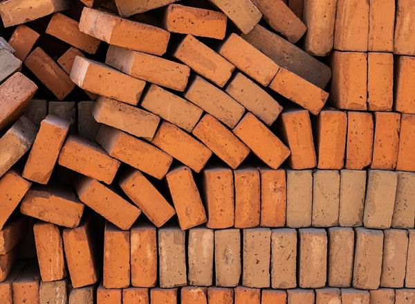 | la brique | brick | |
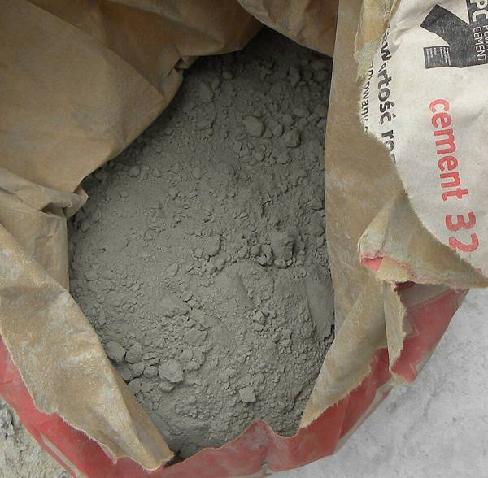 | le ciment | cement | |
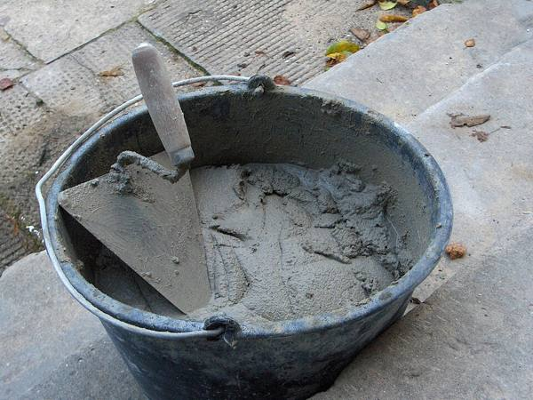 | le mortier | mortar | |
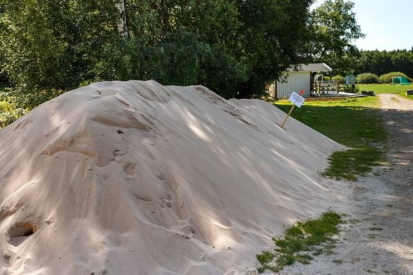 | le sable | sand | |
 | la truelle | trowel | |
 | le niveau à bulle | spirit level | |
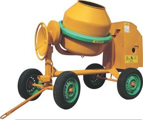 | la bétonnière | cement mixer | |
 | la brouette | wheelbarrow | |
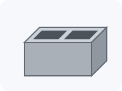 | le parpaing | breeze block | |
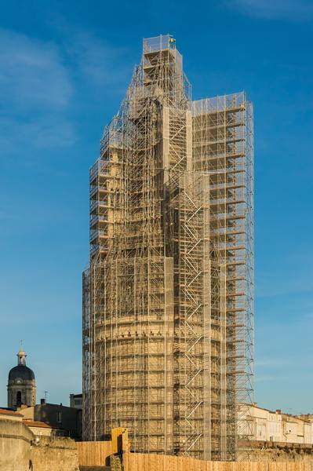 | l'échafaudage | scaffolding | |
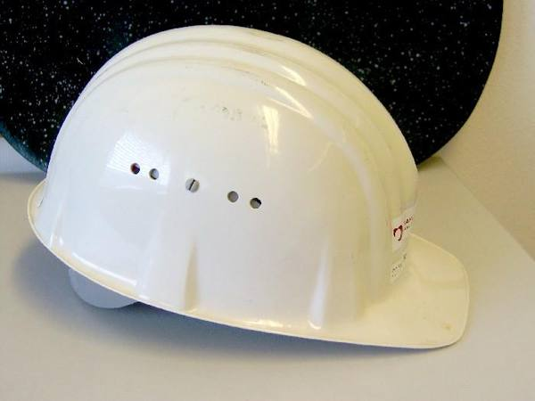 | le casque de chantier | hard hat | |
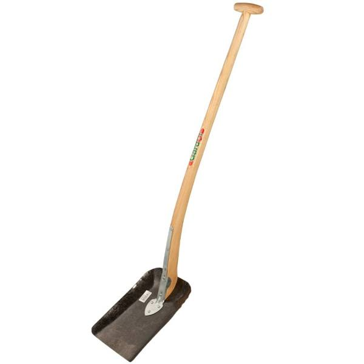 | la pelle | shovel | |
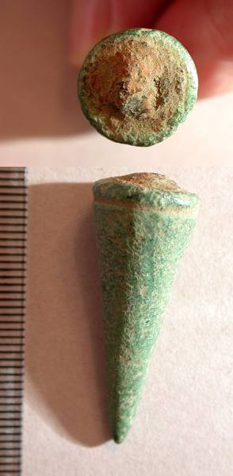 | le fil à plomb | plumb line | |
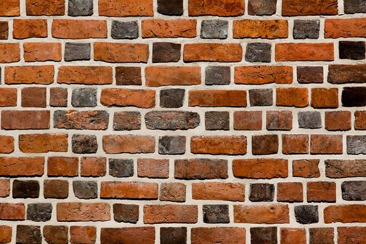 | le mur | wall | |
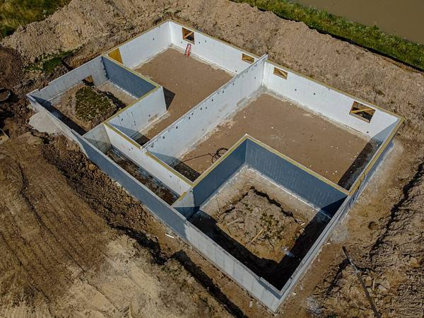 | les fondations | foundations | |
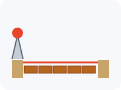 | le cordeau | string line |
Corrigé pour le professeur : phrases au travail
- Spread the mortar with the ________. (trowel)
- Mix sand, cement and water in the ________. (cement mixer)
- Always wear your ________ on site. (hard hat)
- Check the wall is straight with the ________. (spirit level)
- Climb on the ________ to build the top of the wall. (scaffolding)
- Lay one ________ on top of the other. (brick)
Dans les étapes 1, 2 et 3, la bonne réponse correspond à la ligne de la liste de vocabulaire.
Crédits des images
Photos sous licence libre, issues de Wikimedia Commons, redimensionnées pour le téléphone. Dessins originaux pour les gestes et les notions.
- la brique (brick) : photo de Tomascastelazo, licence CC BY-SA 4.0, page du fichier sur Wikimedia Commons.
- le ciment (cement) : photo de Szlomo Lejb, licence CC BY-SA 4.0, page du fichier sur Wikimedia Commons.
- le mortier (mortar) : photo de Stanisław Skowron, licence Public domain, page du fichier sur Wikimedia Commons.
- le sable (sand) : photo de W.carter, licence CC BY-SA 4.0, page du fichier sur Wikimedia Commons.
- la truelle (trowel) : photo de Mike Lupinacci, licence CC BY-SA 3.0, page du fichier sur Wikimedia Commons.
- le niveau à bulle (spirit level) : photo de Dmitry Makeev, licence CC BY-SA 4.0, page du fichier sur Wikimedia Commons.
- la bétonnière (cement mixer) : photo de Paolo Sella, licence CC BY-SA 4.0, page du fichier sur Wikimedia Commons.
- la brouette (wheelbarrow) : photo de Oto Zapletal, licence CC BY 4.0, page du fichier sur Wikimedia Commons.
- le parpaing (breeze block) : dessin original, Itinéraires et destinations, CC BY-NC-SA 4.0.
- l'échafaudage (scaffolding) : photo de Jebulon, licence CC0, page du fichier sur Wikimedia Commons.
- le casque de chantier (hard hat) : photo de OldCrow at German Wikipedia, licence CC BY-SA 3.0, page du fichier sur Wikimedia Commons.
- la pelle (shovel) : photo de SvenPek, licence CC BY-SA 4.0, page du fichier sur Wikimedia Commons.
- le fil à plomb (plumb line) : photo de Buckinghamshire County Council, Jennifer Moss, licence CC BY-SA 4.0, page du fichier sur Wikimedia Commons.
- le mur (wall) : photo de Pawel Wozniak, licence CC BY-SA 3.0, page du fichier sur Wikimedia Commons.
- les fondations (foundations) : photo de Wikideas1, licence CC0, page du fichier sur Wikimedia Commons.
- le cordeau (string line) : dessin original, Itinéraires et destinations, CC BY-NC-SA 4.0.
Fiche de vocabulaire à imprimer
Gros caractères (16 points minimum), en trois formats :